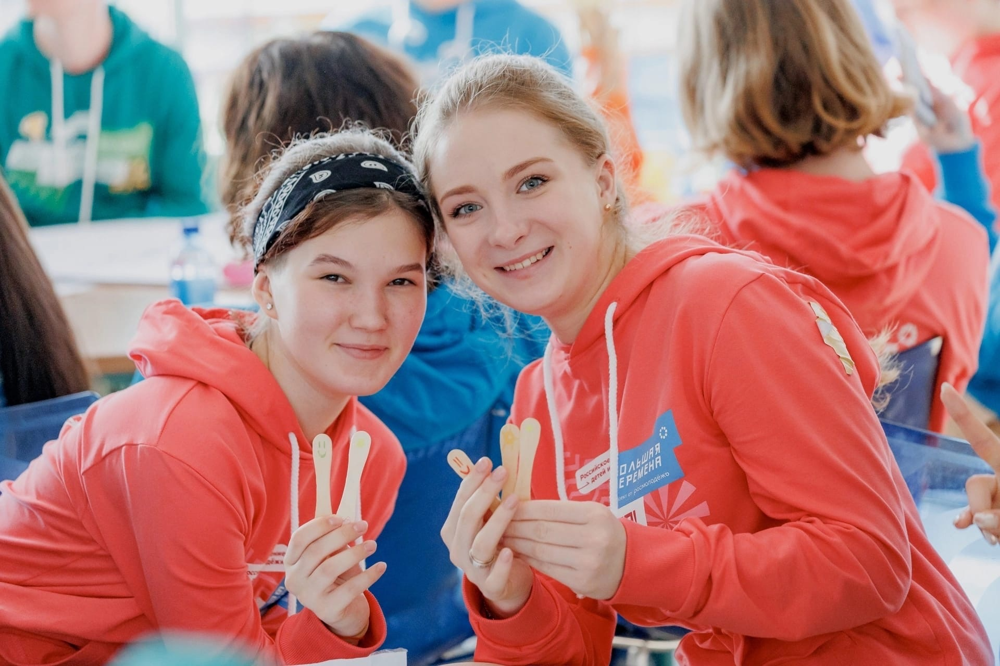
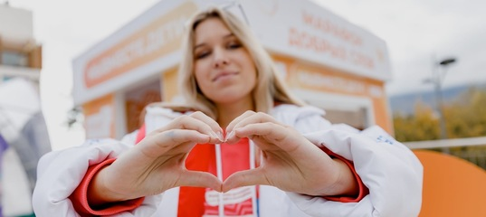
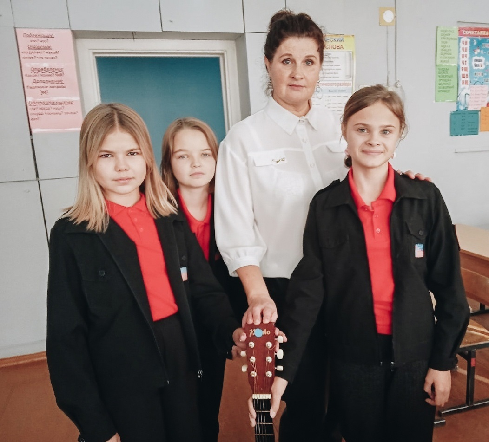
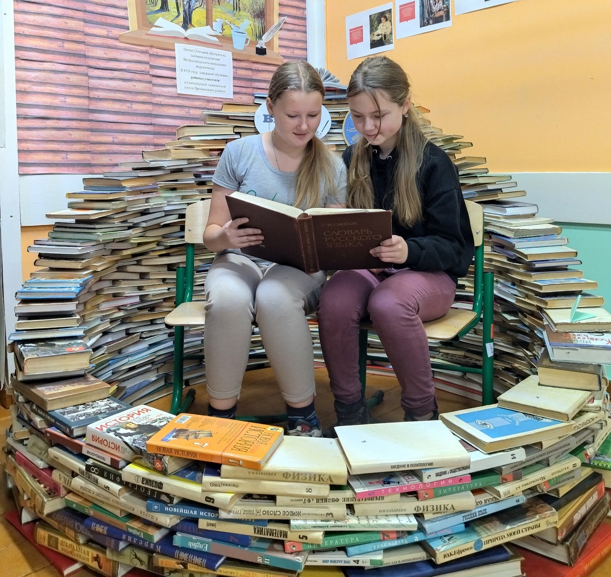
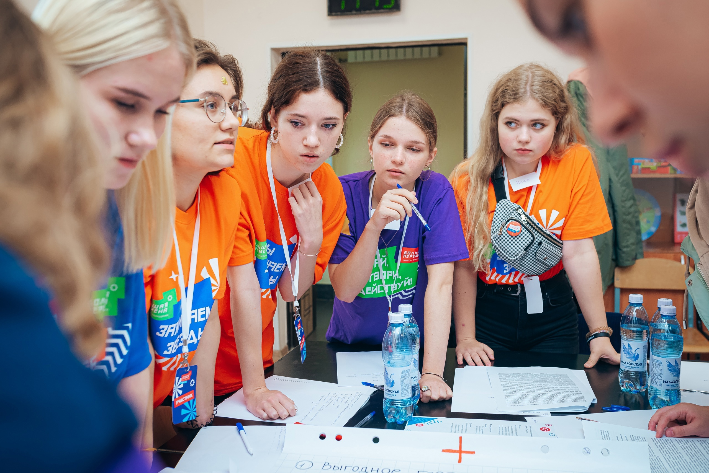
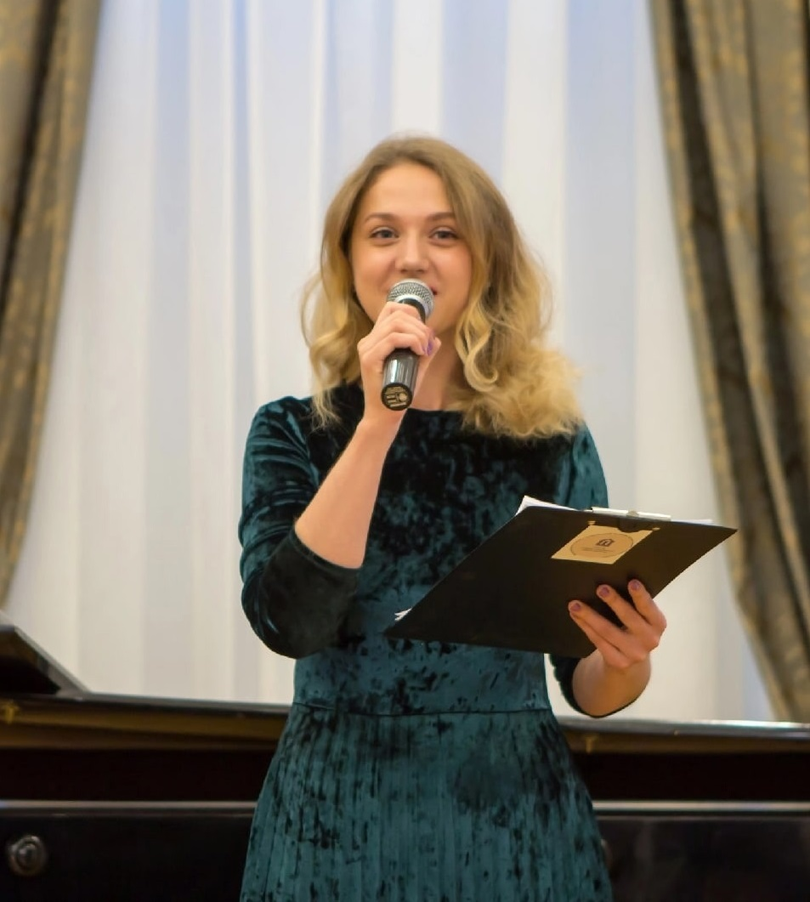
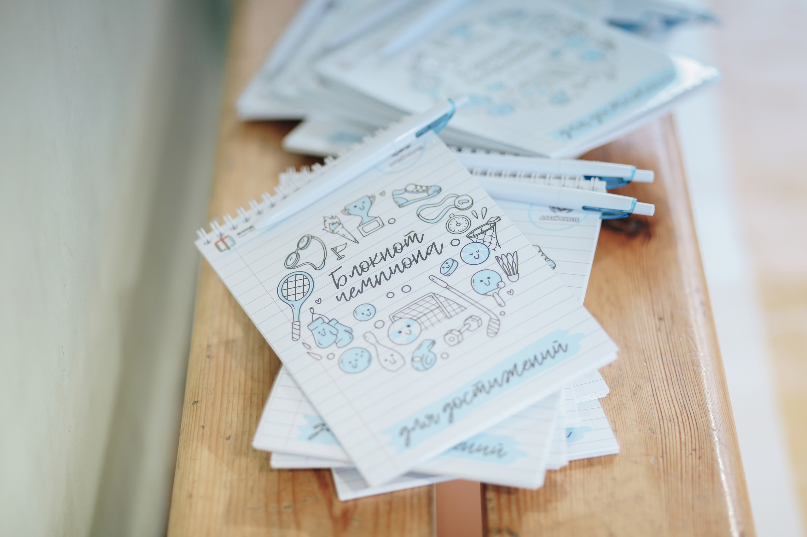
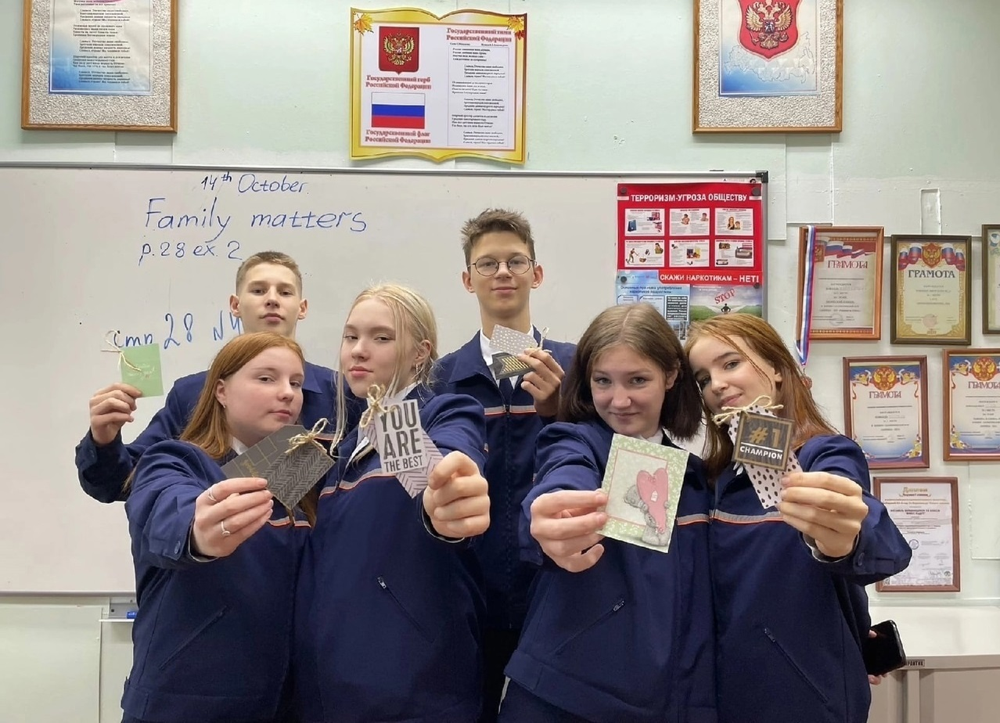

Новости

БОЛЬШАЯ ПЕРЕМЕНА
Дождались! Известны имена победителей «Большой перемены» 2022 года. Все ребята прошли огромный путь через этот сезон: командные задания, путешествия, фестивали, яркие мероприятия, совместные проекты региональной команды и огромное количество новых достижений. Двигайтесь только вперед
От #Навигаторыдетства
28.10.2022

МЫВМЕСТЕ.ДЕТИ
МЫВМЕСТЕ.ДЕТИ – проект, созданный Российским движением детей и молодежи с целью подарить частичку тепла и заботы защитникам нашей Родины. Среди них: «Добрые письма», «Герой моей страны», «Отважным и важным», «Марафон добрых слов» и многие другие.
От #Навигаторыдетства
27.10.2022

ТВОРЧЕСКИЕ ВСТРЕЧИ
20 октября в МКОУ «ООШ №2 г. Олонца им. Сорвина В.Д.» прошли творческие встречи с олонецким поэтом-песенником и советником директора по воспитанию и взаимодействию с детскими общественными объединениями Ириной Степановой (Орумаа).
От #Навигаторыдетства
26.10.2022

День библиотек
Есть только две проблемы: нечего читать и некуда ставить книги📚 Хорошо, что нашим ученикам ещё читать и читать, здесь мы им даже завидуем! Вчера, в Международный день школьных библиотек, советники провели для ребят лекции, мастер-классы и акции.
От #Навигаторыдетства
25.10.2022
Школьная Лига Лекторов
Это намного больше больше, чем просто конкурс с классными подарками. Это отличная возможность попробовать себя в качестве оратора, выступить на сцене и развить те навыки, которые дадут отличный старт для вашей будущей карьеры. Вы сможете не только донести до сверстников что-то важное, но и завоевать их признание и уважение.
От #Навигаторыдетства
24.10.2022

ДВИЖЕНИЕ
Финалисты Всероссийского конкурса «Большая перемена» присоединятся к ДВИЖЕНИЮ. Старшеклассники примут участие в игре «Включайся!» от Российского движения детей и молодежи, в рамках которой создадут модель идеального города для детей и молодежи.
От #Навигаторыдетства
20.10.2022

#Без_штампов
Советник директора ГБОУ РК «Специализированная школа искусств» Мария Валетова — победитель конкурса «Росмолодежь.Гранты 2 сезон»🎉
Проект Фестиваль школьных театров «#Без_штампов» получил поддержку в 550 тысяч рублей. Он направлен на содействие развитию детских театров и театральной педагогики в Республике Карелия
Проект Фестиваль школьных театров «#Без_штампов» получил поддержку в 550 тысяч рублей. Он направлен на содействие развитию детских театров и театральной педагогики в Республике Карелия
От #Навигаторыдетства
19.10.2022

ДАВАЙ ВМЕСТЕ
Класс Дианы Вадимовны Бельковой — советника из Петрозаводска, присоединился к проекту «Давай вместе». Ребята приняли участие в открытом уроке физкультуры, а мы старались поймать их улыбки и старания.
От #Навигаторыдетства
18.10.2022

ДЕНЬ ОТЦА
Школьники Карелии сходили с папами в походы, провели веселые старты, сделали открытки, подготовили видеоролики о своих отцах, а они, в свою очередь, провели для детей уроки, где рассказали о своих профессиях, научили мастерить скворечники и даже поучаствовали в театре теней!
От #Навигаторыдетства
16.10.2022